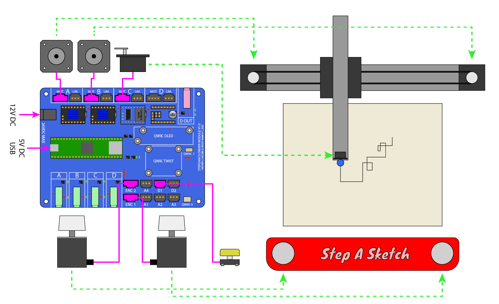
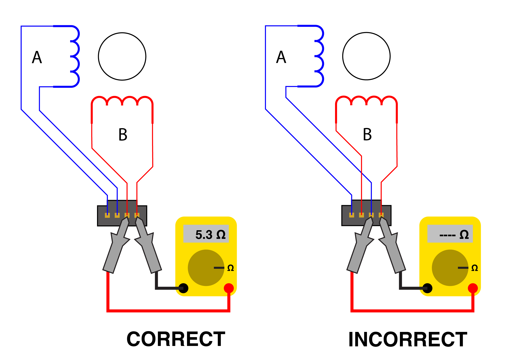

Overview

This example uses two encoders to control a pen plotter (e.g. an AxiDraw) in realtime, a la etch-a-sketch. One knob is mapped to the X axis, and the other to the Y axis. You will learn how to:
- configure outputs ports, in this case to control stepper motor drivers
- create "channels" that each generate output stream components for individual axes of motion.
- use kinematic modules to convert between cartesian XY space and machine motor space.
- read position values from encoders, and use them to drive output channels.
Configuring the Stepdance Driver Board
The axidraw has two stepper motors for XY positioning and a single servo motor for the pen height. The AxiDraw Inkscape plugin and the Stepdance AxiDraw software module both expect that the motors are 200 steps/rev and driven at 1/16th microstepping. You'll want to configure the Stepdance Driver Board as follows:
- To set 1/16 microstepping, install jumpers on both microstepping headers for the A and B output ports as shown below. The jumpers should be oriented vertically (see the Stepper Drivers and Motor Interfaces section on the main page).
- Install two TMC2209 stepper drivers and one Hobby Servo Driver as shown below.
Wiring

There are eight wiring connections to be made:
- Both AxiDraw stepper motors to Output Ports A and B. We've wired the left motor to A, and the right motor to B.
- The servo motor to Output Port C.
- Two encoders, one to each of the encoder input ports ENC1 and ENC2. Details on wiring Taiss encoders are here. Refer to the board reference on the main page for general info on wiring encoders.
- One pushbutton to digital input port D1.
- 5VDC to the Teensy 4.1, delivered over a micro-usb cable. This powers the logic for all of the electronics, except for the hobby servo driver, which generates its own 5V supply. Initially, power this via your computer while programming the Teensy with firmware. Then, you can provide power from a USB charger etc.
- 12VDC to the 5.5mm OD / 2.1mm ID barrel plug.
Wiring Stepper Motors

The Stepdance driver board supports two phase stepper motors. These phases "A" and "B" (represented by blue and red inductor symbols in the diagram above) each has two wires coming off the motor, for four leads total. In order for the motor to spin, it is essential that each phase's two wires enter the connector at adjacent pins.
Sometimes you can rely on the stepper motor mfg for the color code, but sometimes you can't, or you don't know the manufacturer. A simple test is to put a multimeter in ohmeter mode across any two of the four motor wires. If you read a low resistance (typically < 20 ohms), these wires belong to the same phase and should be adjacent to each other on the connector. If you read an infinite resistance, try a different combination.
Flipping the two wires within a phase, or flipping the two phases, will change the direction that the motor spins; this can be corrected in software.
Below illustrates the color codes used in the AxiDraw V3.

Wiring the Servo Motor

Note that the servo is wired into the same 4-pin connector and header as the stepper motors.
Wiring the Button

The button should be wired across the INPUT and 3V3 pins of the Molex SL connector, as shown. We will configure the Teensy to apply an internal pull-down resistor to the input pin, which will cause the input to read LOW when not pressed and HIGH when pressed.
Setting the Motor Driver Currents
Most modern stepper drivers, including the TMC2209s supported by the Stepdance Driver Board, operate using current control. This means that a high voltage (e.g. 24VDC) is used to quickly pump current into the motor coils, and is then cut off once a target current is reached. This allows much higher performance of the motor than a voltage-controlled driver, which needs to operate at a lower voltage in order to avoid over-heating the motor coils. The current control circuitry works by measuring current in each motor coil through a sensing resistor, thereby converting current to voltage, and then comparing this to a reference voltage that sets the current limit. Your mission is to set the reference voltage on each driver to correspond to the rated motor current.
Determine the Peak Motor Current
Motors are typically rated in amps/phase, which is a root-mean-square (RMS) value. The current limits on drivers are typically set in peak current by adjusting a reference voltage. First, you should look up the current rating of whichever motors you are using. For an Axidraw V3, this is 1A/phase. Next, convert this value into peak current, by multiplying by 1.414. This is 1.4A for the Axidraw V3.
Calculate the Reference Voltage
The BIGTREETECH TMC2209 drivers are configured with a gain of 1V/1A, so to calculate the reference voltage, you simply multiply the target peak current by 1.0. For the Axidraw V3, the reference voltage is 1.4V.
Set the Reference Voltage

Using a multimeter, measure the voltage between VREF and GND as shown in the image, and slowly turn the potentiometer until the reading matches your target voltage. A few important notes:
- To get an accurate reading, the Stepdance Driver Board MUST be powered with both +5V thru the USB port of the Teensy 4.1, AND motor power (e.g. 12V or 24V) thru the DC barrel jack. The BIGTREETECH drivers generate their own reference voltage from the motor power supply.
- BE VERY CAREFUL when applying the multimeter probes to the VREF and GND pins on the driver. It is very easy to short out the power supply. If you want to play it safe, probe the GND signal at the Teensy 4.1 instead, using the exposed pads below the Teensy 4.1 socket.
Code
The Step A Sketch code is in the example folder. In the sections below, we walk thru the code by section and explain how all the pieces fit together.

Board Definition
This tells the compiler which board we're using. The other option is module_basic.
Includes
Imports the entire stepdance library. stepdance.hpp includes all the relevant files.
Define all stepdance components
Here we instantiate objects for all the stepdance components we'll be using.
OutputPort
This software module is responsible for converting a internal step commands into a frame of pulse signals on a stepdance output port.
For this example, these output ports are being used to individually control three motor drivers: two stepper drivers for XY motion and a hobby servo controller that emulates a stepper driver. Consequently, we define one output port for each of the motor drivers.
Channel
Channels are software modules that generate internal step commands, and route them to output ports; they do so by tracking a target position while applying velocity limits. Typically, one channel is used for each motion axis of a machine. Channels are also where the positional state of each axis is usually stored.
We define a channel for the "A" and "B" motors of the Axidraw, as well as the "Z" axis pen control.
KinematicsCoreXY
There are many mechanical kinematics used to drive machines, but conceptually, most machines operate either in XYZ (i.e. Cartesian) or Rθ (i.e. polar) space. To support these various mechanical arrangements, Stepdance has kinematics modules that convert from "normal" cartesian or polar space into motor angle space.
The AxiDraw uses a belt-driven positioning mechanism with differential kinematics, which is supported by the KinematicsCoreXY module.
Encoder
This module supports using quadrature encoders as inputs for other stepdance modules.
Button
This module reads a digital signal from one of the inputs (A1->A4, D1->D2) and calls functions based on how the signal changes and how the button is configured.
PositionGenerator
In order to lift and lower the pen, we instantiate a position generator, which will drive a distance at a set velocity.
Setup()
The setup function is the standard Arduino function that is called once before loop() gets called continuously.
Note that with the exception of InputPort, OutputPort, and Channel, all other software modules must be started by calling begin() in the order that they should run. For example, in the code below, we will start the encoders before we start the kinematics, because the encoders feed into the kinematics and therefore must run first.
Enable the Stepper Motors
Eventually this will be handled automatically, but for now, we do it manually.
Configure Output Ports
Each OutputPort module is begun with the name of the physical output port to which it is attached. Note that for clarity we name the OutputPort instances the same as the physical output port names.
Configure Channels
Each channel is begun with a pointer to the target OutputPort and the signal asserted on that output port when the channel takes a step. Because the output ports are directly connected to stepper drivers, we choose the longest pulse-width signal, "E", to make it compatible especially with our servo emulator.
Next, we set an input "transmission ratio" on each channel. This helps with converting between units. Most of the Stepdance modules will operate internally in linear units such as mm, while the channel itself operates in steps. So the set_transmission_ratio() function specifies how many input units (first parameter) equals how many output units (second parameter). In this case, 25.4mm (i.e. 1 inch) is equivalent to 2876 axidraw motor microsteps. Note that the Z axis servo motor will operate internally in steps rather than mm.
Finally, if needed, we can invert the output direction for any of the channels. You may need to play with these depending on how your motors are wired, to get the machine to move in the correct direction.
Configure Encoders
Encoders are begun with the IO port name.
Next, we set an output ratio for the encoders; in this case, we say one revolution (2400 pulses for our TAISS encoders) is equivalent to 24mm.
We then connect the encoder to input transmissions of the kinematics module by calling the map() function. Note that the first encoder is mapped to "input_transmission_x" and the second encoder to "input_transmission_y". In this way, the first knob will move the axidraw in X, while the second knob will move it in Y.
Lastly, if necessary, we can invert the encoder directions.
Configure the Kinematics
Here we begin the kinematics module, and then map its outputs to the "A" and "B" motor channels.
Configure the Button
First we initialize the Button object by associating it with a physical input port (D1) and specify that the pin should have a pulldown using the standard Arduino definition.
Next, we configure the button as a toggle, meaning that the Button's logical state will change (e.g. from released to pressed, or vice-versa) when the input state changes. For example, physically pressing an attached button once may cause the Button object to transition to a "pressed" state, and pressing the attached button a second time will then release the Button object.
Lastly, we associate callback functions for when the Button is pressed and released.
Importantly, depending on configuration, the Button object's state (pressed, released) may not directly map to the state of the input physical button.
Configure Position Generator
Here we directly connect the PositionGenerator object to the Z Axis Channel object's input transmission.
Start Stepdance
Caling this function will start running all of the modules. This should be called last.
Loop()
For this example, we actually don't need to do anything in the loop function! Stepdance largely runs in background interrupt routines. However, it is good practice to call dance_loop() at the end of the loop function, because it provides valuable utilities that you might want to use in your own code.
Custom Functions
In order to implement pen up and pen down, we write two custom functions:
When called, these will cause the position generator to go to +500 or -500 steps, at a rate of 2000 steps/sec. This is the full range of the hobby servo driver board. Note that the absolute position state is stored in the PositionGenerator object, rather than in the Z Axis Channel object.